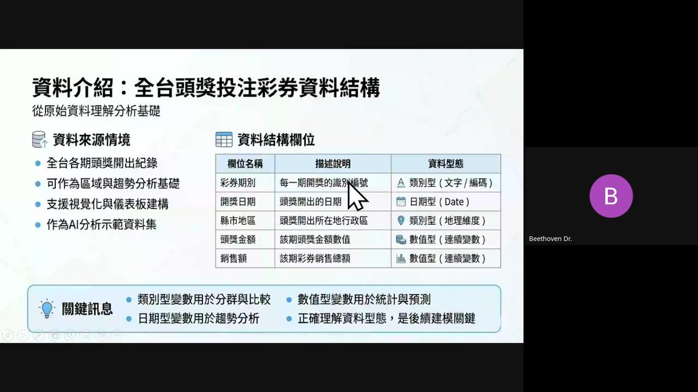
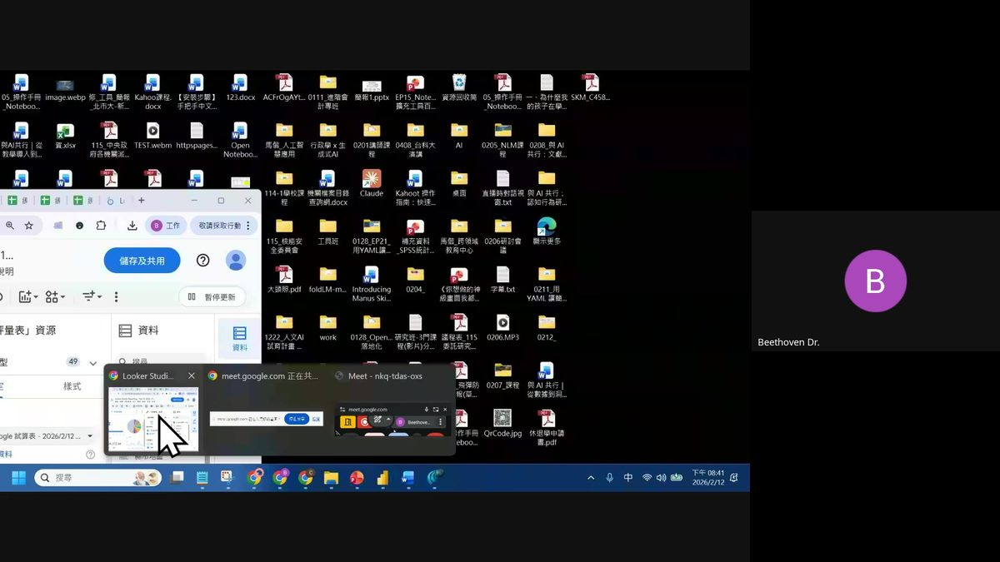
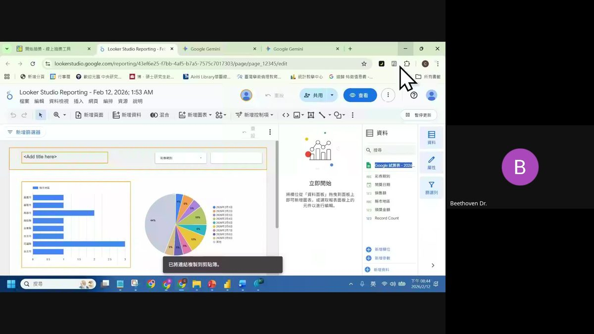

0. 課程資訊與教材
| 課程名稱 | EP21_「讓數據會說話：AI 賦能的 Power BI × Looker Studio 視覺化實戰」 |
|---|---|
| 頻道 | 生成式AI應用電台・晨學講堂 |
| 直播日期 | 2026/02/12 |
| 教材 | 僅有錄影（無獨立課堂筆記或簡報檔），本頁內容全部整理自錄影逐字稿與畫面截圖 |
| 一句話先懂 | 把資料從「懶人一鍵生成的圖表」升級成「真正可互動、可重複使用的儀表板」——工具用 Looker Studio 入門、Power BI 補進階，最後再交給 AI 技能把重複性的操作自動化。 |
💡 誠實聲明：EP21 的 Drive 資料夾裡只有一支約 86 分鐘的錄影，沒有另外的講義或簡報檔。依照本站規則，這種情況不能跳過或用推測內容交差，因此本頁是把完整錄影下載、用 Whisper 逐字稿轉寫、並實際擷取畫面截圖親眼檢視後整理而成，細節見文末「資料來源與製作說明」。
1. 開場：為什麼要做視覺化，不只是做表格
從「懶人一鍵生成」出發，講清楚為什麼還要花時間學真正的視覺化工具。
懶人做法的問題
- 常見做法是直接把一份統計圖表資料丟給某個線上快速生成工具（一種可以把資料快速轉成簡報／圖表的線上功能），系統就會跑出一個簡單版本的圖表。
- 但這種做法通常沒辦法真正滿足老闆或自己的需求，因為它的「可動性」（互動性、可調整性）比較低。
- 資料的連動性也不好——每次資料更新，都要重新手動上傳一次，沒辦法自動同步。
⚠️ 逐字稿說明：老師口中這個「懶人做法」用的工具，音檔裡的說法比較模糊（近似「canva 式快速拉圖」功能），無法百分之百確定是哪一款產品，本頁選擇保留籠統描述，不做無根據的指名猜測。
表格滿足不了人的直覺需求
- 資料整理完之後，我們常會先把它做成表格，例如常見的財產資產負債表、損益表、收支表等等。
- 但表格通常沒辦法滿足我們對「資訊」的直覺需求——人類是非常直觀的動物，比起一排排數字，更想要「看得到」的視覺化呈現。
- 例如：圓餅圖裡特別把某一塊獨立標示出來、用顏色凸顯重點、或是讓趨勢線一路往上的走勢圖。
- 更進一步，還可以做到更細緻的分眾分析（老師舉例像醫療領域可以做到更細部的族群分析）。
「今天的實作，就是要帶大家從『懶人一鍵生成』的階段，往上一層走到『真正可互動、可重複使用的儀表板』。」
—— 開場定調
2. 兩大主流視覺化工具比較：Power BI vs Looker Studio
操作大同小異，只是版面有點不一樣——核心概念幾乎一致，學會一套另一套很快上手。
| 項目 | Power BI | Looker Studio |
|---|---|---|
| 出品 | 微軟 | Google（前身叫做 Data Studio） |
| 生態整合 | 跟微軟自家生態鏈（例如 OneDrive 上傳資料）整合度高 | 相對單純 |
| 可用載體 | 桌面版、網頁版、手機版，較多元 | 主要就是網頁版操作 |
| 定位 | 進階、可搭配程式化操作 | 比較常被用在輕量的視覺化需求 |
💡 老師選擇「先教 Looker Studio」：正是因為兩者概念非常相近，且介面相對單純，適合當作入門起點，之後再帶到 Power BI 補充比較進階、可寫程式的部分。
3. 練習資料：模擬版全台頭獎投注彩券資料
今天實作使用的資料集，是老師自己模擬產生的「2026 春節頭獎模擬數據」，共 100 筆。
⚠️ 老師特別強調：「這不是今年真實開出的資料，是我模擬出來的」——這是為了教學示範而生成的練習資料，不是官方彩券開獎紀錄。

資料結構欄位
| 欄位 | 資料型態 | 說明 |
|---|---|---|
| 彩券期別 | 類別型 | 每期開獎的識別編號 |
| 開獎日期 | 日期型 | 該期開獎的日期 |
| 縣市地區 | 類別型／地理維度 | 頭獎開出所在地行政區 |
| 頭獎金額 | 數值型（連續變數） | 該期頭獎金額 |
| 銷售額 | 數值型（連續變數） | 該期彩券銷售總額 |
✅ 關鍵訊息（簡報原文）：類別型變數用於分群與比較／數值型變數用於統計與預測／日期型變數用於趨勢分析——正確理解資料型態是後續建模關鍵。

今天想達成的目標
做出一個「互動式資訊儀表板」：可以看到目前累積的頭獎總金額、銷售額、中獎注數，以及哪個縣市頭獎金額最多等資訊，並且具備互動功能（例如可以點選、篩選特定縣市查看細節）。
4. 手把手基本功：先自己拖一次，再交給 AI
「這是基本功，我們不能只學這個，但也不能不學。」
- 像 Looker Studio 或 Power BI 這種工具，傳統上都可以透過手動把欄位、圖表元件一個個拖曳、搬移、調整位置來完成（老師形容是「慢慢刻」）。
- 這個手動操作的過程雖然基本，但建議大家還是要先自己動手做出一兩個圖表、一兩張表格，練習基本操作邏輯。
- 接下來比較複雜、重複性高的部分，才交給 AI 代勞。
實際操作示範
- 打開 Looker Studio，把練習資料的試算表接進去當資料來源。
- 透過「將欄位從資料面板拖曳到面板上」的方式新增圖表。
- 做出依縣市地區分布的橫向長條圖與依開獎日期分布的圓餅圖。
- 透過畫面上方的篩選器（例如依「彩券期別」篩選）跟不同圖表互動連動。

💡 這張圖就是今天手動拖曳基本功的最終成果——先靠自己的手把兩張圖做出來，才有辦法在下一節看懂 AI 幫你自動化的是「哪一段流程」。
5. 進階自動化：把「操作 Looker Studio」寫成一個 AI 技能（Skill）
這是本集後半段的重點示範。
目前 Looker Studio、Power BI 這類視覺化工具，還沒有辦法被 AI 直接原生串接、自動操作，所以能做到「自動化操作」的方式，目前主要是透過可被 AI 控制的瀏覽器代理，老師點名了三個目前用起來比較順的工具：
- Comet（Perplexity 推出的 AI 瀏覽器）
- Claude in Chrome（Anthropic 推出的瀏覽器擴充功能，若已安裝可直接使用）
- Google 這邊也有對應的瀏覽器代理功能可以做到類似效果（老師提醒美國地區帳號可能可以更早直接使用）
⚠️ 逐字稿說明：第三項 Google 瀏覽器代理功能，老師在音檔中的說法較為模糊，無法確定是哪一款正式產品名稱，本頁沿用課堂上的籠統描述，不做無根據的指名猜測。
做法的邏輯
- 先請 AI（例如 Claude 或 Manus）「寫好一個技能（Skill）」。
- 這個技能專門負責把使用者的需求「翻譯」成 Comet、Claude in Chrome 等工具看得懂、可以執行的指令（老師稱為 prompt／腳本）。
- 技能做好之後，只要把資料丟給它，它就能根據資料量身打造一份對應的操作指令。
- 把指令直接貼進 Comet 瀏覽器或類似工具去執行——瀏覽器就會自動動滑鼠、逐步把 Looker Studio 的一份標準版報表都建置好，大概只需要 5 到 10 分鐘。
- 使用者最後只要做檢查、確認結果即可。
「這個 Skill 是有程序性的：只需要設計一次，之後只要把新的需求或資料丟給它，它就能持續把需求轉譯成可在 Comet 瀏覽器或 Claude 上執行的操作指令，不用每次重新設計流程。」
—— 老師強調的核心概念
Manus 平台的技能功能示範
- 在介面中點選「使用技能」→「管理技能」，可以看到官方預先寫好的技能，也可以自己建立客製化技能，操作起來很快速。
- 目前 Manus 的免費版就能使用技能功能。
- Claude 官方也已宣布會將 Skill 功能全面開放給免費用戶使用，代表未來會有更多人使用、也會出現更多現成的技能可以參考套用。
- 老師提到預計三月初會另外開一場「Skill」專題直播完整教學。
6. Power BI 與 AI 整合的優勢：可以直接寫程式
兩者在「能否被 AI 直接程式化操作」這件事情上，還是有實質差異。
| 能否被 AI 程式化操作 | Looker Studio | Power BI |
|---|---|---|
| 方式 | 目前還沒辦法直接被 AI 用程式碼串接執行動作，只能透過前述的瀏覽器代理方式間接控制 | 可以寫程式——可透過類似 DAX／M 這類查詢語言，直接請 AI 幫忙寫成對應的腳本語法去執行操作 |
因此如果之後想要跟 AI 做更深度的整合（例如自動化報表產製流程），無論是線上版還是桌面版的 Power BI，會比純網頁版的 Looker Studio 更方便一些。
7. 結語與社群資訊
- 從「為什麼要做視覺化」出發，比較 Power BI 與 Looker Studio 兩大工具的定位差異。
- 練習了資料型態判讀與手動拖曳做圖的基本功。
- 示範如何用 AI 技能把整個 Looker Studio 儀表板建置流程自動化。
- 補充 Power BI 可寫程式的 AI 整合優勢。
社群活動公告
- 隔天早上還有一場關於「人工智慧基本法」的直播（探討台灣人工智慧基本法未來兩年的修法與日落條款動向，以及公部門的人工智慧使用手冊上市，並提及三月的 iPAS 相關考試可留意），歡迎有興趣的夥伴以「旁聽」身份加入。
- 提醒大家可以透過課程平台頁面查詢自己的購課紀錄與加入對應的課程空間。
「感謝大家參與。」
—— 直播結尾
8. 資料來源與製作說明
- 原始教材：本集 Google Drive 資料夾裡只有一支約 86 分鐘的錄影（實際直播的螢幕分享錄影），沒有另外附上課堂筆記或簡報檔。
- 製作方式：依照本站「不可以自行跳過或降級使用者指定的資料來源」的規則，這集把完整錄影下載，用 Whisper（small 模型，中文）把音軌完整轉寫成逐字稿，並擷取螢幕分享的畫面截圖逐張親眼檢視後，才整理成本頁內容。
- 內容真實性：本頁所有內容都取自真實的逐字稿轉寫與真實截圖，不是推測或重新編造；但中文語音辨識（ASR）在專有名詞上並不完美，逐字稿原文出現不少音譯誤植（例如「power di」「look studio」「comment瀏覽器」「minus」等），本頁已對照上下文，把明顯可判讀的誤植字修正為正確術語（如 Power BI、Looker Studio、Comet、Manus）。
- 刻意保留模糊之處：逐字稿中有兩處產品名稱在音檔裡本身就含糊不清、無法百分之百判定——一是討論「Google 瀏覽器代理功能」時的確切產品名稱，二是開場提到的「把圖表丟進某個線上工具快速生成」所指的確切產品。這兩處刻意用籠統描述帶過，沒有用猜測去指名，避免誤植成不存在或不正確的產品名稱。
- 真實截圖：本頁嵌入三張真實課程截圖——資料結構簡報畫面、練習資料試算表畫面、完成後的 Looker Studio 互動儀表板畫面。
- 介面參考：互動技能地圖頁沿用本站既有的卡片式多層導覽與遊戲化進度設計。